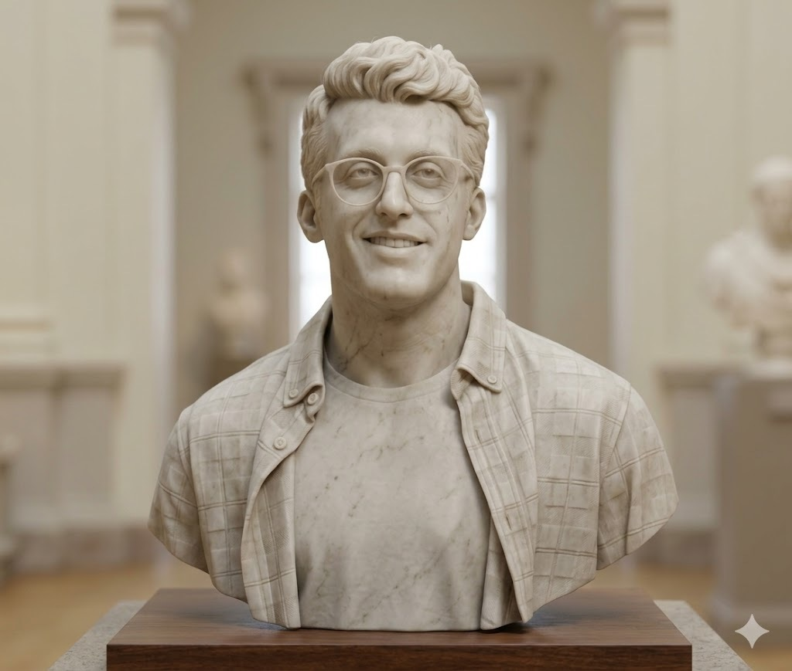
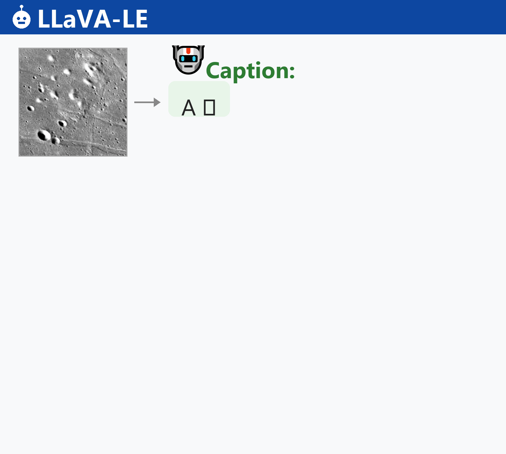

|
Pouyan Navard I'm a computer vision engineer at Path Robotics Inc., where I build end-to-end deep learning systems for generalizable robotic robotics and 3D neural asset generation. I did my PhD at The Ohio State University, where I was advised by Alper Yilmaz. I've received the Robert E. Altenhofen Memorial Award. During my PhD at the Photogrammetric Computer Vision Lab, I studied self-supervised learning on 3D volumetric data, diffusion-based generative models, and vision-language reasoning. That research now shapes my work at Path Robotics, where I design deep learning systems for robotic perception—including multimodal backbones for generalized robotics, diffusion-based 3D asset generation for simulation, and the MLOps infrastructure that ties it all together. |
 |
{kind=link}
PublicationsResearch Interest: I study how machines see, generate, and reason about visual content. My work sits at the intersection of generative modeling and visual understanding—building systems that can synthesize realistic imagery under precise control and enabling multimodal models to interpret complex visual scenes. |
|
 LLaVA-LE captioning and QA on lunar imagery. |
LLaVA-LE: Large Language-and-Vision Assistant for Lunar Exploration
Gokce Inal*, Pouyan Navard*, Alper Yilmaz * Equal technical contribution arXiv 2025 (under review) Project Page / arXiv / Code We introduce LLaVA-LE, a vision-language model for lunar surface and subsurface characterization. We curate LUCID, a new dataset of 96k panchromatic images with scientific captions and 81k QA pairs from NASA missions. Fine-tuned with a two-stage curriculum, LLaVA-LE achieves a 3.3x gain over base LLaVA, with reasoning scores exceeding the judge's own reference. |

Right-click and open the image in a new tab for better resolution
SeamCam-based camouflage image generation vs. SOTA. |
SeamCam: Quantifying Seamless Camouflage via Multi-Cue Visual Detectability
Amin Karimi Monsefi, Abolfazl Meyarian, Mridul Khurana, Shuheng Wang, Pouyan Navard, Cheng Zhang, Anuj Karpatne, Wei-Lun Chao, Rajiv Ramnath ECCV 2026 (under review) arXiv / Code We introduce SeamCam, a camouflage evaluation metric that quantifies how detectable an animal is from visual evidence. SeamCam achieves 78.82% agreement with human judgments, outperforming state-of-the-art by ~25%. We further use SeamCam as a preference signal for DPO fine-tuning of diffusion-based inpainting models for camouflage generation, and introduce CamFG-1.5k, a curated benchmark of 1,521 high-resolution images for unbiased evaluation. |
|
Sketch-to-image generation with adjustable detail. |
KnobGen: Controlling the Sophistication of Artwork in Sketch-Based Diffusion Models
Pouyan Navard, Amin Karimi Monsefi, Mengxi Zhou, Wei-Lun Chao, Alper Yilmaz, Rajiv Ramnath CVPR 2025, CVEU Workshop Project Page / arXiv We introduce KnobGen, a dual-pathway framework that bridges the gap between novice sketches and expert-level image generation. Our system dynamically balances fine-grained detail and high-level control using adjustable modules, producing high-quality results from any sketch. |
|
3D medical image segmentation results. |
SegFormer3D: an Efficient Transformer for 3D Medical Image Segmentation
Shehan Pererra*, Pouyan Navard*, Alper Yilmaz * Equal contribution CVPR 2024, DEF-AI-MIA Workshop Project Page / CVF / Code SegFormer3D redefines 3D medical image segmentation with a lightweight hierarchical Transformer that rivals state-of-the-art models. By blending multi-scale volumetric attention with an all-MLP decoder, we achieve competitive accuracy with 33x fewer parameters and 13x lower compute. |
Micropapers & Service |
Micropapers |
ERDES: A Benchmark Video Dataset in Ocular Ultrasound @ (HuggingFace🤗)
A Probabilistic-based Drift Correction Module for Visual Inertial SLAMs (arXiv) |
Academic Service |
Journals: IEEE TPAMI (2026)
Conferences: CVPR, ICCV, ECCV, ICLR, AVSS, ACCV, SIBGRAPI (2023–2025) |
|
Design and source code from Jon Barron's website. |